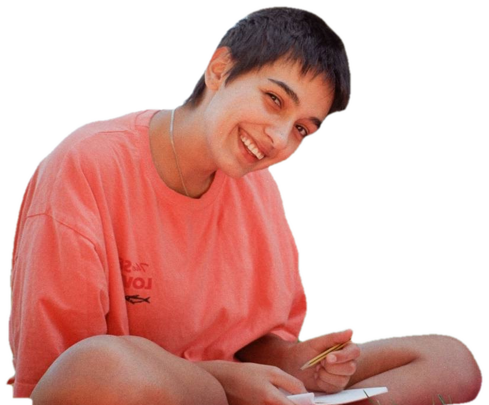

2026
Viko Portfolio
Digital Illustrator

Hey, I'm Viko.
I'm a digital illustrator who creates whimsical worlds and characters.
At the moment, I'm open to commission work, book cover illustrations, and illustrations for brands.
Selected work
Click any piece to see it bigger.
Latest collection: Birds in Boots
Five birds, five little personalities.
Contact
For commissions and collaborations, write to me at
viktoriia.sviata@gmail.com